peru
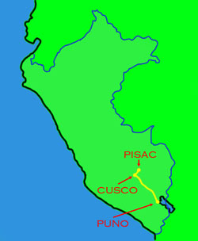
around cusco
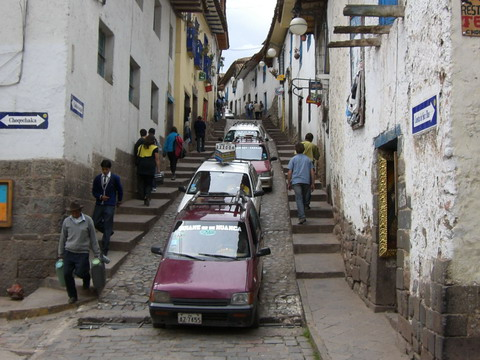cusco is the tourist centre of peru with more cheap trinket shops that you could poke a llama at. however it still retains it's cool architecture and lots of narrow cobblestone streets. most building still have their original inca foundations. also a very nice central plaza
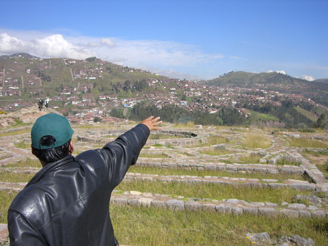here we are in saqsaywaman with our guide showing us some of the surrounding area. there is also a great view over cusco from here.
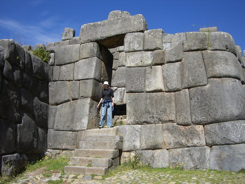along with views there are loads of cool ruins with the classic inca stone work you'd expect to see around these parts.
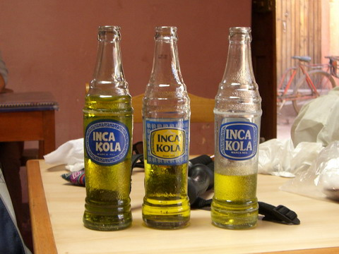the best drink in south america, maybe the best fizz i've ever had, is the amazing bubble gum / ice creaming soda flavoured inca kola. this pic is a great demostration of the stock quality in peru; three bottles purchased from the same store, all with a different label?? hmmmm. if you want to try it in australia you get it from here $6.50AU for 1.5ltr. or you could fly to peru and get a 1.5ltr bottle for about $0.80AU
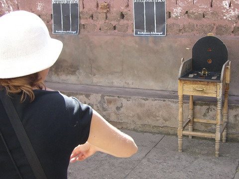this is the fun game of sapo! the table has a bunch of different scored holes to throw discs into. the top score is straight down the frogs throat. it your disc bounces off the table you have to take a sip of maize beer.
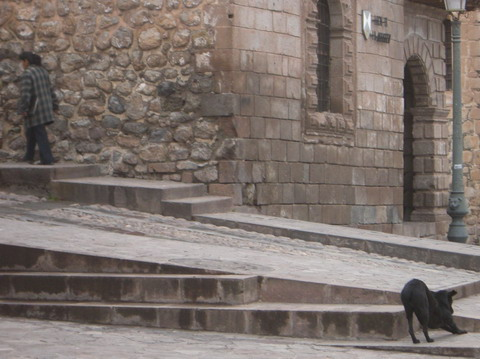a simple shot of the plaza, but one i like a lot.
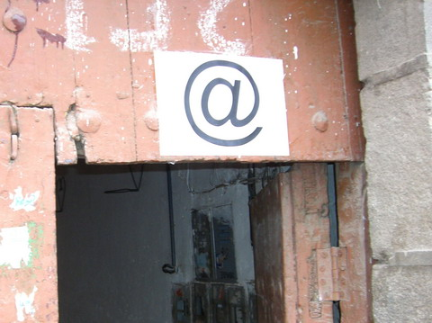the international sign of the internet cafe! we never had a problem finding one in south america (well, maybe except in the amazon). in fact there were more about than anywhere i've ever been. not only that, internet in south america was a 1/12th the price of that in miami! go figure.
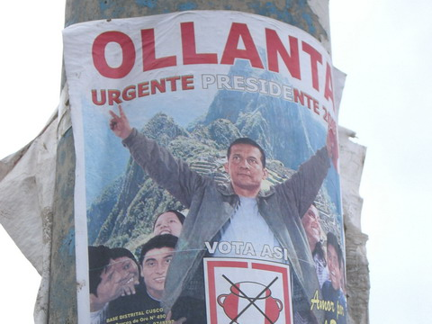as i said before the federal elections were on. there were posters everywhere and a whole whole lot of political graffiti.
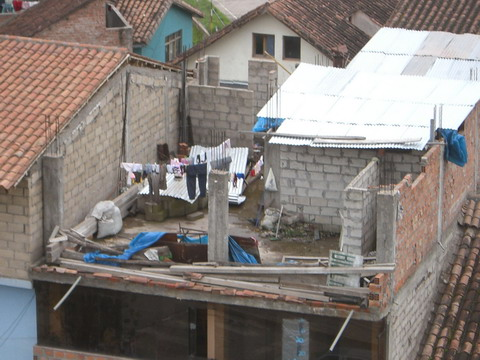next time you think your house is crap just remember how lucky you are!
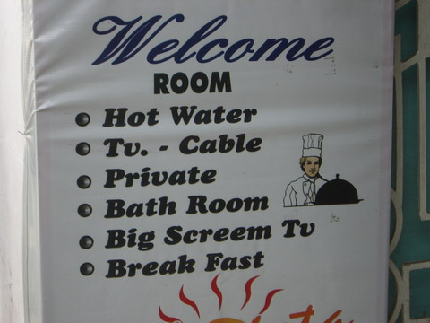and remember especially how lucky you don't have a BIG SCREEMING TV! AAAAAAAAHHHHHHHHHHHHHHH!
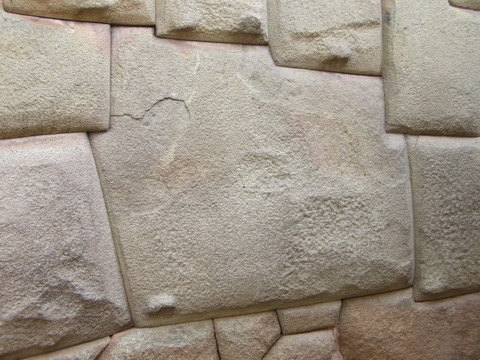the twelve angled stone. one of cuscos most famous pieces of stone masonry. it's fit's pretty perfectly. this phone was taken at one of the few times it wasn't being swarmed by other tourists or locals dressed up in traditional kit holding baby llamas looking fortourist dollars.
pisac
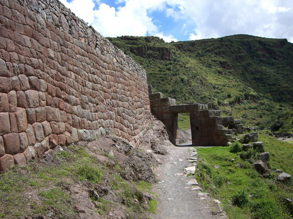the sacred valley is the main route between cusco and the inca trail. we spent most of our time near pisac. there are lots of awesome views and lots of temples on the hillsides.
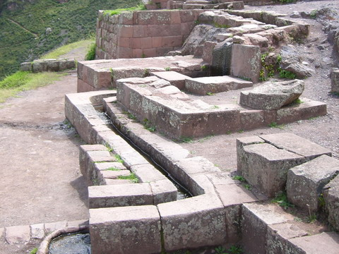they don't make em like they used to. all the water systems we saw in temples and stuff were all still running.
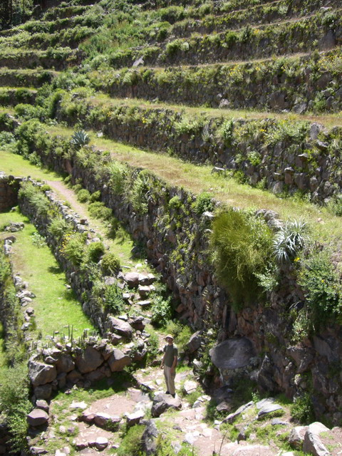the incas were famous for their terrace gardens. they were quite happy to do a lot of work on a hillside to make room for crops. they even had different types of potatoes for different altitudes up the cliff side.